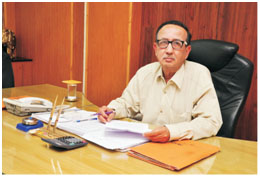
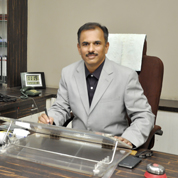

About Us
Explore our institute, values, leadership, and vision
Principal and Secretary Desk
Secretary's Desk

SAPDJ Pathashala
Shri Aillak Pannalal Digamber Jain Pathshala's Walchand Educational Institutes are recognized globally as vibrant Skill Development Centres. This Group imparts multidisciplinary knowledge and trains the students in various skill sets and simultaneously builds a sound cultural base in the students. The motto of the group 'Education is Religion' inspires all the stake holders like a light house to realize the vision of the trust.
In today's fast changing age of globalization and technology, skill building is an important instrument to increase the efficacy and quality of manpower for improved productivity and economic growth. Skill building is also a powerful tool to empower individuals and improve their social acceptance in corporate sector. It must be complimented by economic growth and employment opportunities to meet the rising aspirations of youth. The challenge lies not only in a huge quantitative expansion of facilities for skill training, but also in raising the quality of training. Our trust ensures in capacity building of such young students who can fulfill their dreams through career opportunities offered by various corporate companies which visit our group for campus placements. We also encourage students to become entrepreneurs as part of Startup India.
Walchand College of Arts and Science (WCAS), Solapur has been upholding the tradition of quality academic interaction and has been expanding in various fields for more than five decades. WCAS has been awarded with prestigious 'A' grade by NAAC and it has also been conferred with the coveted status of 'College with Potential for Excellence (CPE)' by UGC. The students of this college are working as ambassadors in various institutions of national and international importance.
Walchand Centre for Biotechnology, a new academic venture of the group, is an emerging, revolutionary branch in Science with immense applied potential. Walchand Centre for Research in Nanotechnology & Bionanotechnology was established in 2015. Here we nurture the innovative ideas for implementing newer multidisciplinary programs of modern age as per the global needs. As a result, our Group of students are selected for national level research festival held at Association of Indian Universities.
In addition to the conventional and professional courses in the Commerce and Management faculty, Hirachand Nemchand College of Commerce (HNCC) offers skill based certificate courses to make students competent to face the challenges of the increasing cut throat competition. The various activities, that are a part and parcel of the MBA course at HNCC, make the students successful and responsible in all walks of life. The college is committed for overall development of the students by providing platforms to nurture, showcase and explore their talents and achieve their goals.
Walchand Institute of Technology (WIT) has already made its mark at the global level through its Alumni who are working for various MNCs across the industry verticals and across the globe. Kasturbai College of Education and Research Center is serving the nation by grooming the teachers of the next generation. Digamber Jain Pathashala's students are constantly showcasing their wonderful achievement in Yoga at national level. Nutan Vidyalaya, Ashti, Dist. Solapur is regularly showing extraordinary achievement in national level Archery Competition. Shri Deshbushan Kulbhushan Vidyalaya, Kunthalgiri, Dist. Osmanabad is also performing well in various curricular and extracurricular activities.
We provide ample opportunities and platforms to our students emerge as effective personalities contributing to nation building.
SAPDJ Pathashala, Solapur
Principal's Desk

HN College of Commerce
I am very fortunate to work with supportive management, dedicated staff, caring parents, and passionate/creative students. The overall development of each individual student is our focus. We recognize that as we 'Work together and learn together' students will be best able to achieve their potential. The students of HNCC are offered many opportunities to explore their interests and investigate new ideas. We offer them platforms to excel in associations, activities, to improve their skills in various fields, and grow knowledge.
The college strives hard to make the best possible efforts to inculcate strong values among students and combine academics with extra-curricular activities.
Everything that makes a good institution are a highly trained faculty, rich library, placement cell, E.D. cell, teaching methods, and the library to think and express themselves, we have it here. Thus, I firmly believe that HNCC is not only just a place to learn but an endless ocean to seek knowledge.
I wish all the students a grand success in their career and prosperity in their future life.
HN College of Commerce, Solapur